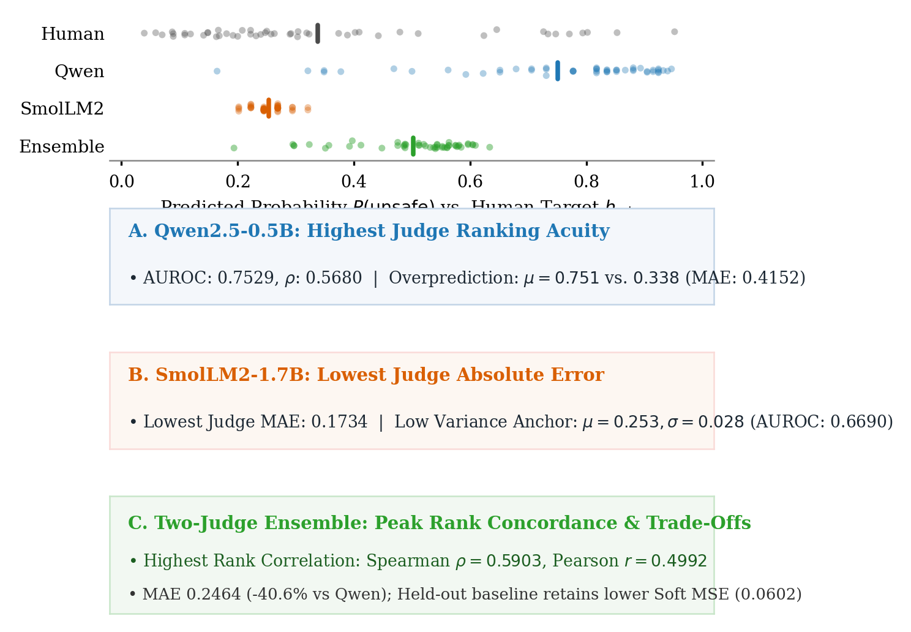
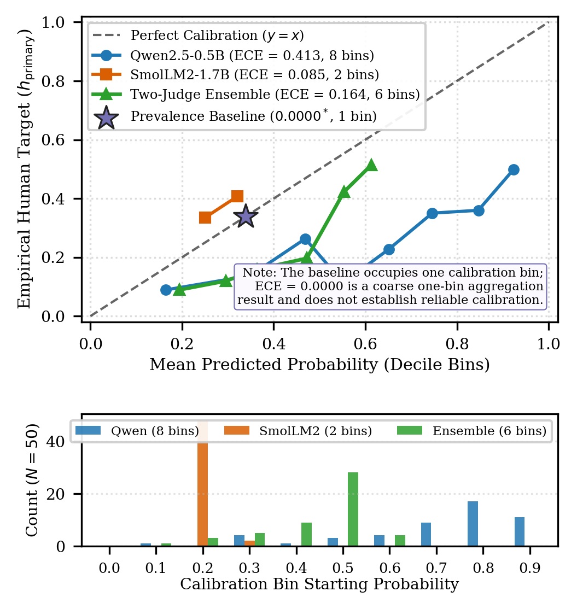
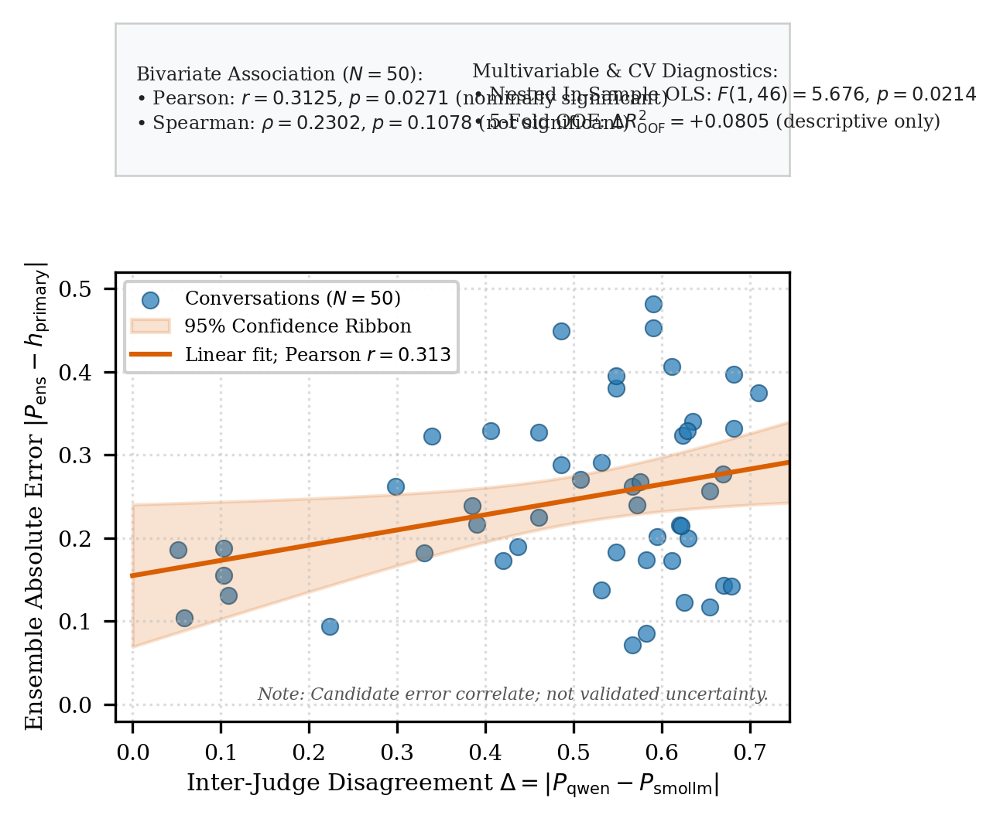
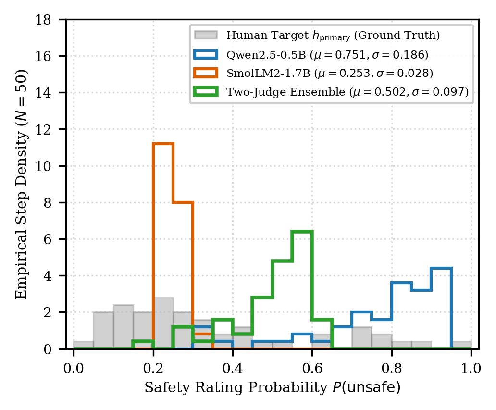
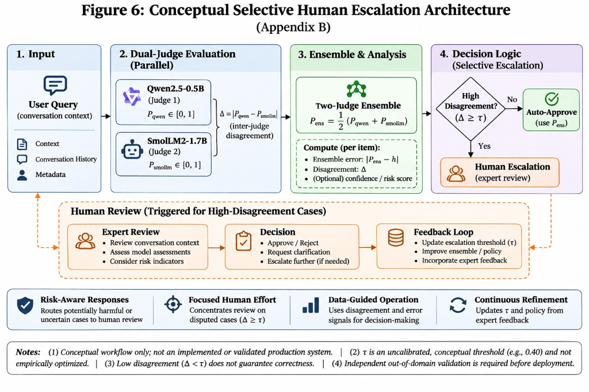

Phase 2B.1 Visual Revision — High-Resolution Previews from Verified Local Data Artifacts
Figure 1: Page 1 Teaser — Evaluator Paradigm and Trade-offs
Main Body: Page 1Revised LayoutVector PDF + 300 DPI PNG | 3.5 × 3.6 in

Fig. 1: Concise multi-metric comparison cards below empirical prediction distributions. Highlights Qwen's highest judge AUROC (0.7529) vs. positive bias (0.751 vs. 0.338), SmolLM2's lowest judge MAE (0.1734) via low-variance anchor (σ=0.028), and the Ensemble's peak rank concordance (ρ=0.5903) and -40.6% MAE reduction, while accurately reporting held-out baseline lower Soft MSE (0.0602).
Figure 2: Reliability and Decile Calibration
Main Body: Section VUnblocked LegendVector PDF + 300 DPI PNG | 3.5 × 3.8 in

Fig. 2: 10-bin reliability diagrams and sample occupancy. Legend relocated to empty upper-left region to strictly prevent data overlap. Explicitly notes in callout: "The baseline occupies one calibration bin; ECE = 0.0000 is a coarse one-bin aggregation result and does not establish reliable calibration."
Figure 3: Inter-Judge Disagreement vs. Evaluation Error
Main Body: Section VIZero-Overlap LayoutVector PDF + 300 DPI PNG | 3.5 × 3.5 in

Fig. 3: Dedicated statistical card separated above the scatter plot, completely eliminating point overlap. Accurately labels "Linear fit; Pearson r = 0.313" and clearly distinguishes Pearson r (0.3125, p=0.0271), non-significant Spearman ρ (0.2302, p=0.1078), nested in-sample OLS (F=5.676), and descriptive 5-fold CV (ΔR²=+0.0805).
Figure 4: Continuous Distribution Alignment
Appendix FVector PDF + 300 DPI PNG | 3.5 × 2.9 in

Fig. 4: Empirical 20-bin step density overlay comparing Qwen, SmolLM2, and Ensemble against human ground truth without artificial smoothing. Clean single-column layout with unobstructed legend.
Figure 5: Conceptual Selective Human Escalation Workflow
Main Body / AppendixFull-Width 2-Column ArchitectureVector PDF + 300 DPI PNG | 7.0 × 2.8 in

Fig. 5: Redesigned full-width horizontal flowchart detailing the 6 numbered steps: 1. Incoming Conversation, 2. Prompt Serialization, 3. Independent Judge Scoring (Qwen2.5-0.5B & SmolLM2-1.7B), 4. Disagreement & Prediction Extraction, 5. Decision Diamond (Δ < τ), and 6. Illustrative Routing (Tier 1: Auto Audit vs. Tier 2: Human Review). Prominent banner emphasizes that threshold τ is uncalibrated, low disagreement does not guarantee correctness, and the workflow is an illustrative conceptual proposal requiring independent validation.